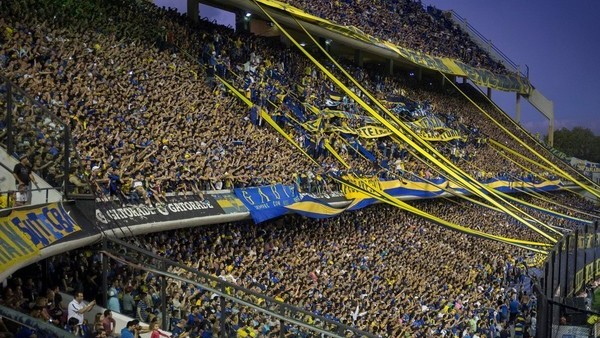
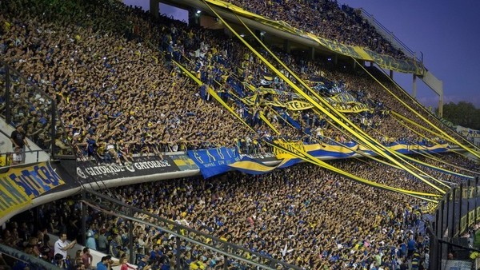

La Bombonera
Historia
La historia de la Bombonera se remonta a la década de 1930, cuando el Club Atlético Boca Juniors decidió construir un estadio propio en el barrio de La Boca. En ese entonces, Boca Juniors jugaba en el Estadio Alvear y tenía que compartirlo con otros equipos, lo que les impedía tener un espacio propio y acorde a su grandeza. El terreno elegido para la construcción de la Bombonera estaba ubicado en una zona cercana al puerto de Buenos Aires, rodeado de fábricas y almacenes. La obra estuvo a cargo del arquitecto José Luis Delpini y del ingeniero civil Victor Sulcic, quienes diseñaron un estadio de forma rectangular con tribunas de madera. El estadio fue inaugurado el 25 de mayo de 1940, en un partido amistoso entre Boca Juniors y San Lorenzo de Almagro. En ese entonces, la capacidad del estadio era de alrededor de 40.000 espectadores. A lo largo de los años, la Bombonera ha sido testigo de muchos momentos históricos del fútbol argentino e internacional. En 1950, fue la sede del primer partido de la Selección Argentina después de la Segunda Guerra Mundial. En 1978, fue una de las sedes del Mundial de Fútbol celebrado en Argentina, y en 2018 fue el escenario de la final de la Copa Libertadores entre Boca Juniors y River Plate.
Galeria

 
